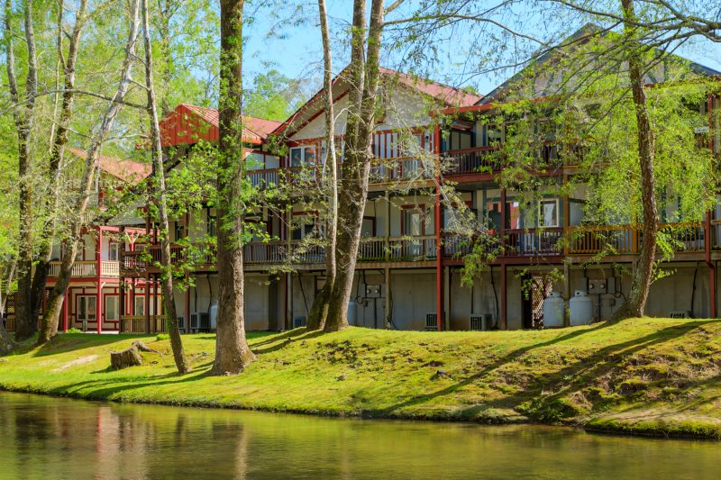

Dining
pretzels to pizza to porterhouse
PROST! From a broad selection of “rathskellers” boasting traditional German cuisine to a wide variety of eateries designed to satisfy an array of appetites, be sure to come to Helen HUNGRY! Stroll down the sidewalk with an ice cream cone in your hand, dine al fresco within view of the water or enjoy a romantic dinner by candlelight. Raise a pint to a collection of palatable possibilities that are virtually endless!

Lodging
From cozy cabins and charming bed-and-breakfasts to hotels with stunning views, there’s a perfect place for every traveler. Explore unique accommodations that fit your style and budget.
Explore the history of Helen with visits to the local museum, historic churches, and nearby landmarks that tell the story of this charming town.